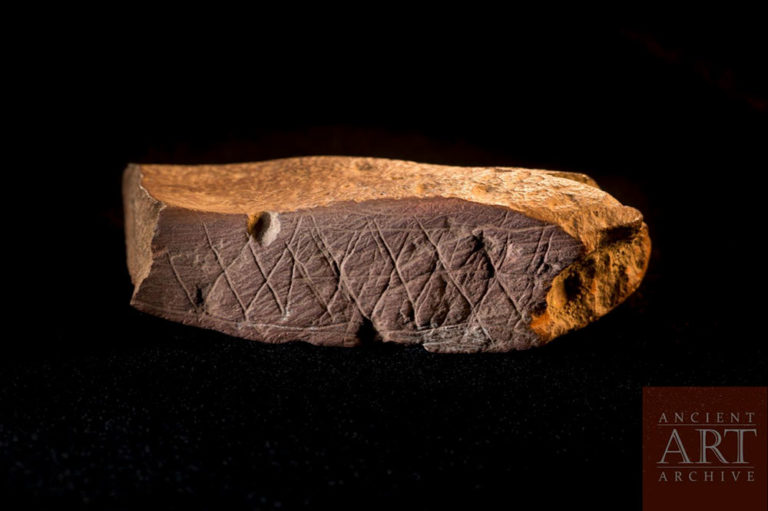

The Continual Search for Linguistic Beginnings
A gradual process is needed to reach full maturity. This holds true for the evolution of language, reflecting on deep prehistoric origins. Human communication did not suddenly erupt with the dawn of written traditions 5,000 years ago; it is rooted in an evolutionary past as symbolic primates. Unraveling these beginnings requires navigating a complex labyrinth of indirect evidence—spanning social play, neurological adaptation, and anatomical evolutionary pressures.

[Ref: Blombos-M1-1] Title: Engraved Ochre Plaque | Provenance: Blombos Cave, South Africa | Date: c. 75,000 BP | Significance: Early evidence of human abstract geometry and symbolic storage. | Image Repository: Ancient Art Archive.
By examining language through a biological and behavioral lens rather than a purely historical one, we can trace how early hominids developed the cognitive scaffolding necessary for complex syntax, long before the first characters were ever pressed into clay tablets.
Core Curated Monographs
The following foundational texts serve as the structural framework for studying the biological and technological crosswalks that defined early human communication:
-
Botha, Rudolf, and Chris Knight, eds. (2009). The Prehistory of Language. Oxford University Press.
Scope: Evaluates the multi-disciplinary hurdles of language evolution by synthesizing social, neurobiological, and anatomical perspectives. Critically looks at the absence of direct evidence and the reliance on indirect evolutionary indicators.
-
Leroi-Gourhan, André. (1993). Gesture and Speech. MIT Press.
Scope: Formulates a comprehensive theory of human behavior connecting prehistoric technology to cognitive development. Explores how erect locomotion and the freeing of hands during movement directly influenced early linguistic faculties.
-
Deutscher, Guy. (2005). The Unfolding of Language: An Evolutionary Tour of Mankind's Greatest Invention. Henry Holt & Co.
Scope: Traces the genesis of grammatical complexity from rudimentary utterances to highly nuanced structures, demonstrating how continuous forces of creation and decay shape linguistic history.
Comparative Signaling & Timeline Shifts
A critical layer of studying prehistoric language involves analyzing communicative benchmarks in non-human species alongside archaeological revisions. For example, breakthrough research into prairie dog communication systems highlighted highly specific, color-coded signaling traits used to distinguish threat levels—a profound realization of structural messaging existing outside human speech.
Simultaneously, contemporary peer-reviewed datasets from institutions like the Library of Congress and the Smithsonian continually challenge the timeline of speech capability, pushing the physiological potential for early vocalization back millions of years. This ongoing dialogue highlights the necessity of maintaining flexible, dynamic taxonomy structures within digital academic research guides.